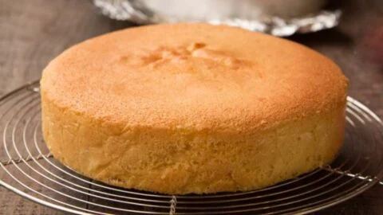

Cake Recipe

Description
Cake is a form of sweet food made from flour, sugar, and other
ingredients, that is usually baked.
In their oldest forms, cakes were modifications of bread, but cakes now
cover a wide range of preparations that can be simple or elaborate, and
that share features with desserts such as pastries, meringues, custards,
and pies.
Ingredients
- 3 cup all purpose flour
- 4 egg
- 2 teaspoon baking soda
- 2 teaspoon vanilla essence
- 1 1/2 cup powdered sugar
- 1 cup milk
- 1 cup butter
Steps
- Cream together butter and sugar.
-
Combine flour, baking soda, vanilla essence, milk and beaten eggs.
- Bake the cake as per your convenience.
- Check with a knife or skewer if it is cooked and serve.